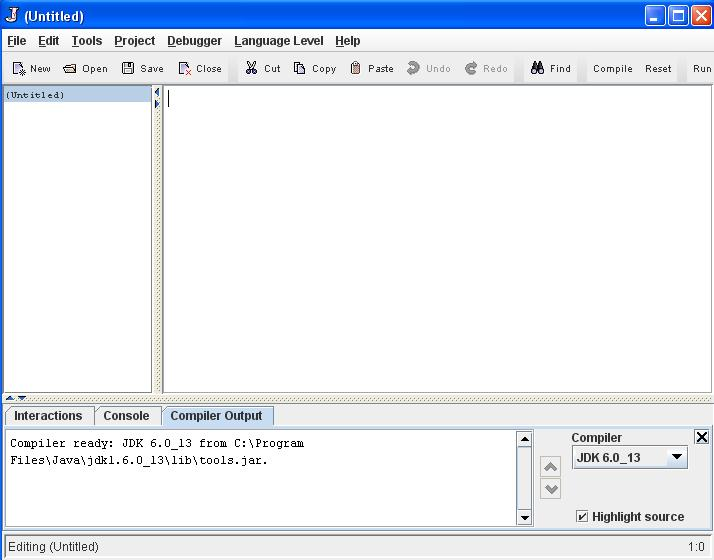
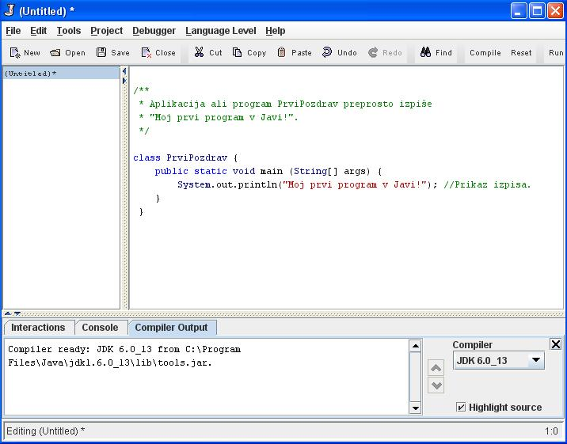
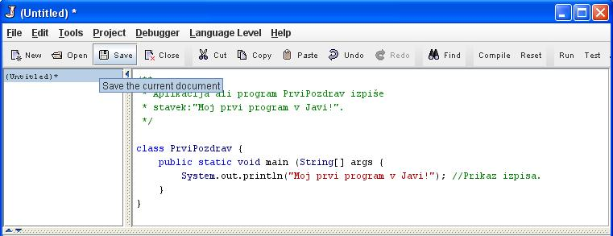
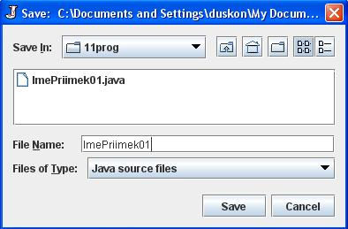
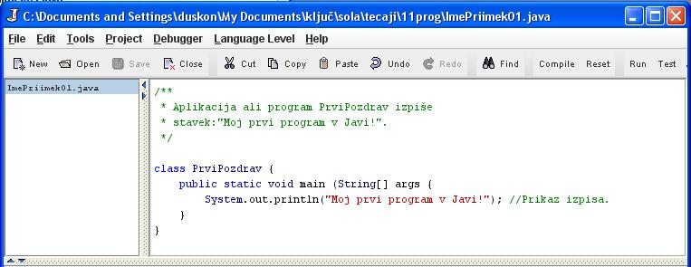
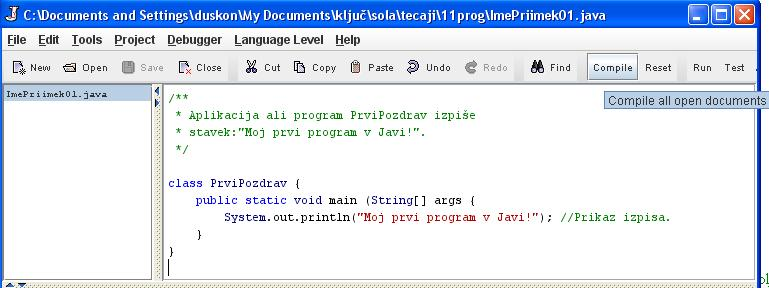
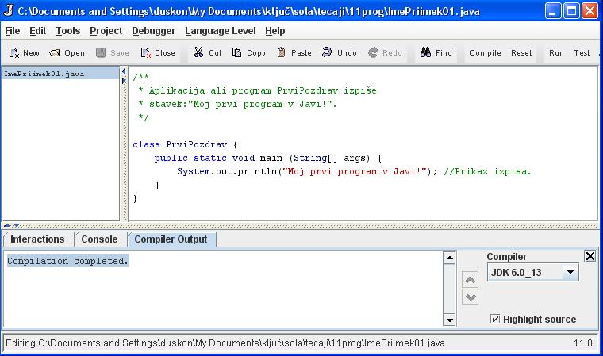
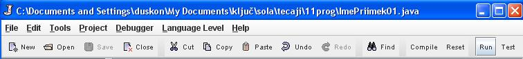
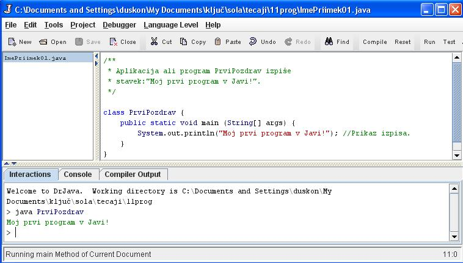

POGOJI ZA DELO V JAVI
- Za programiranje v programskem jeziku Java potrebujemo sledeèe:
- Na raèunalnik moramo namestiti razvojno okolje za Javo. Obièajno je oznaèeno s kratico JDK (Java Development Kit) in s številko razlièice.
- Okolje za interaktivno delo s programèki v Javi. Precej pogosto lahko naletimo na Programsko okolje drjava.
- Koraki izdelave programa v Javi so tile:
- Zapisovanje izvorne kode programa v izbranem programskem jeziku. Mi smo se odloèili za Javo. Za izdelavo izvorne kode lahko uporabimo preprost urejevalnik besedila: beležnico, Textpad. Datoteko z izvorno kodo v Javi prepoznamo po konènici .java.
- S pomoèjo prevajalnika, ki ga vsebuje razvojno okolje JDK, prevedemo izvorno kodo v navodila. Ta navodila javansko programsko okolje (JVM - Java Virtual Machine) lahko razume in izvede. Konènica prevedenega programa je .class. Navodila, ki jih ta datoteka vsebuje, imenujemo tudi "bytecodes".
- S pomoèjo orodja za zagon Java programèkov lahko programe v Java zaženemo in preverimo njih delovanje. Mi bomo spoèetka uporabljali orodje za interaktivno delo drjava.
IZDELAVA PRVEGA PROGRAMA
- Zaženimo okolje drjava. To storimo tako, da kliknemo na ikono tega programa.
- Vtipkajmo kodo prvega programa, kot jo vidimo na sliki. Pri tipkanju bodimo natanèni in upoštevajmo vse znaèilnosti, ki jih vidimo na sliki.
- Ko smo kodo vtipkali, novi dokument shranimo.
- Novi dokument shranimo v želeno mapo, v kateri bomo imeli vse datoteke, povezane z Javo, kot Java izvorno datoteko (Java source files). Shranimo jo s svojim lastnim imenom in priimkom ter zaporedno številko datoteke, ki je indeks datoteke.
- Datoteka je sedaj shranjena pod izbranim imenom.
Sedaj naš programèek še prevedimo, da bo lahko deloval v okolju Java. To storimo tako, da kliknemo na gumb "Compile" (prevedi).
- Prevajalnik odkriva tudi morebitne napake v kodi in na njih opozarja. V našem primeru smo pozabili dodati okrogli oklepaj za besedico "args". Prevajalnik nas na to opozori. Napako torej popravimo in prevajalnik še enkrat zaženemo. Ko je prevajanje konèano, nam drjava to sporoèi.
- Programèek "PrviPozdrav" še poženemo s klikom na gumb "Run".
- Rezultat delovanja programèka lahko vidimo v spodnjem podoknu na zavihku "Interactions" okolja drjava.
VAJA 1:
- V okolju za pisanje izvorne kode v jeziku Java, za prevajanje in za interaktivno delo zapiši zgornji program "PrviiPozdravPriimek". Sledi navodilom na slikah.
- Kodo lahko tudi kopiraš iz te datoteke in jo prilepiš v okolje, v katerem pišeš programèke. Pozor: koda, ki jo boš kopiral/a, vsebuje eno, dve, tri ali štiri napake. Èe želiš, da bo program deloval, moraš napake odkriti in jih odpraviti.
- Izvorno kodo shrani pod imenom "ImePriimek01.java". ImePriimek je seveda tvoje lastno ime in priimek.
- Datoteko "ImePriimek01.java" prevedi.
- Prevedeno datoteko zaženi, preveri rezultat v interaktivnem oknu in poklièi profesorja, da vidi rezultat.
1. Vprašanja:
1. Na svojem raèunalniku poišèi mapo, v kateri je namešèeno razvojno okolje JDK. Zapiši celotno pot in ime mape, v kateri se razvojno okolje nahaja.
2. Zapiši tudi ime oziroma razlièico razvojnega okolja, ki je namešèeno na tvoj raèunalnik.
3. Zapiši celotno pot in mapo, v kateri se nahaja program za interaktivno delo v Javi.
4. Kako se imenuje naš prvi program v Javi?
5. Pod kakšnim imenom si ta program shranil/a?
6. Kakšno konènico ima izvorna koda shranjenega programa?
7. Kakšno konènico ima prevedeni programèek?
8. Pod kakšnim imenom se je datoteka prevedenega programèka shranila v tvoji mapi?
9. Opiši vzrok morebitnih težav pri prevajanju programèka v tej uèni enoti?
10. Kaj izvede programèek, ki smo ga napisali v tej uèni enoti?
2. Zapiši od ene do pet kljuènih besed, ki povzemajo vsebino te uène enote.
3. Povezave do dodatnih informacij.
Gradiva na spletnih straneh fakultete za matematiko in fiziko v Ljubljani. Oglej si prosojnice.
Animacija, ki prikazuje izdelavo preprostega programèka in zagon v pozivnem oknu.
Spletni priroènik proizvajalca programskega okolja Java. To je podjetje Sun.
|